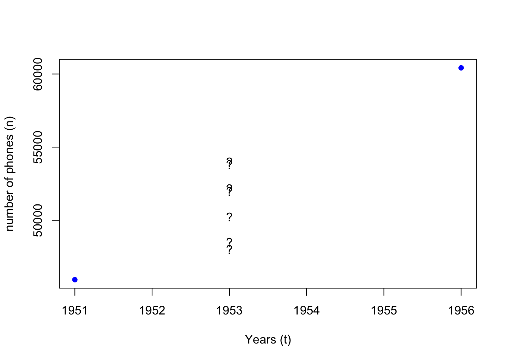
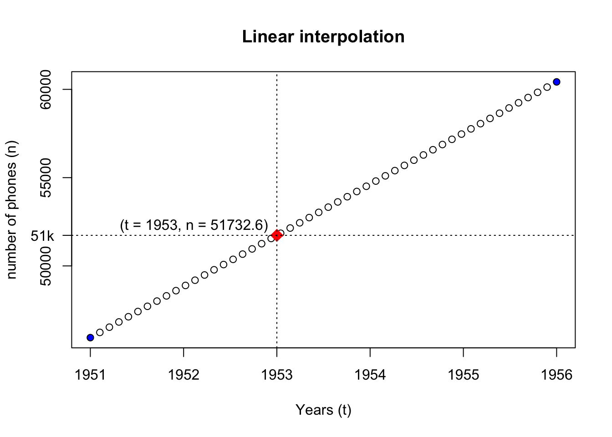
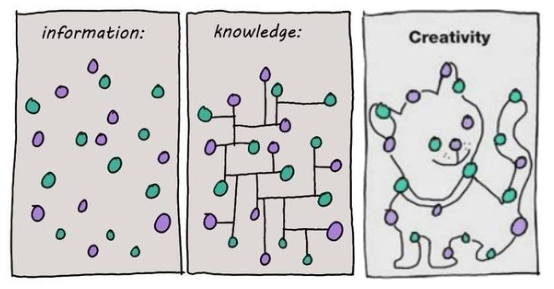
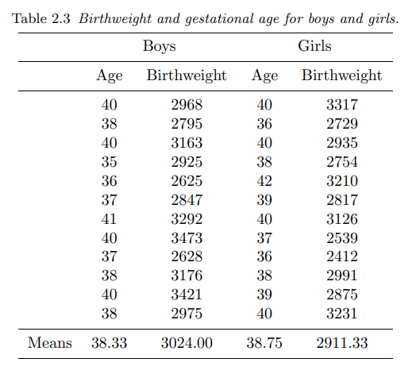
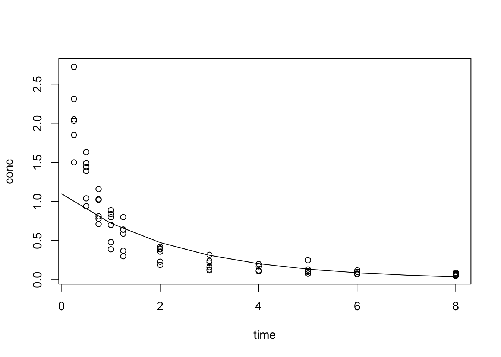
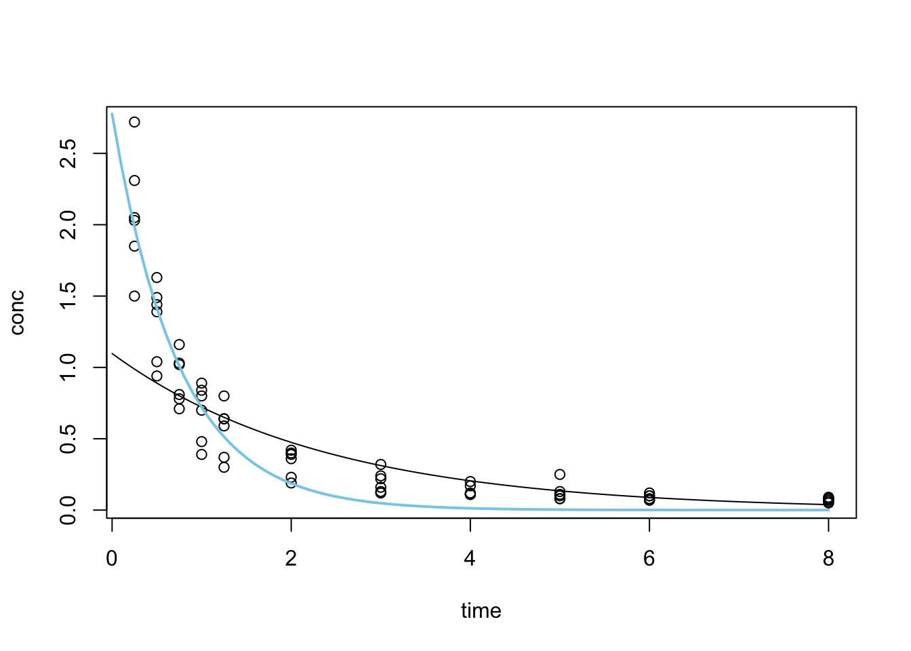
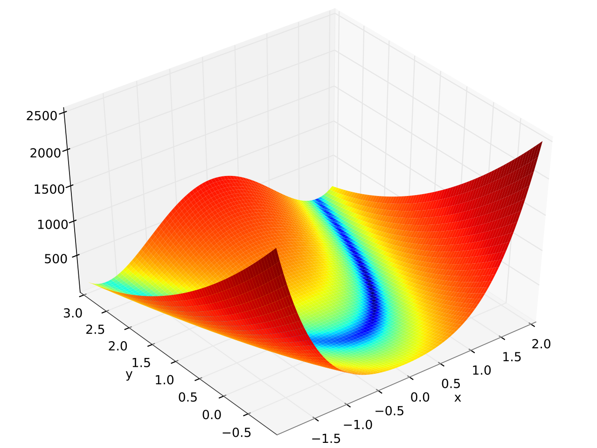

N.Amer Europe Asia S.Amer Oceania Africa Mid.Amer
1951 45939 21574 2876 1815 1646 89 555
1956 60423 29990 4708 2568 2366 1411 733
1957 64721 32510 5230 2695 2526 1546 773
1958 68484 35218 6662 2845 2691 1663 836
1959 71799 37598 6856 3000 2868 1769 911
1960 76036 40341 8220 3145 3054 1905 1008
1961 79831 43173 9053 3338 3224 2005 107616 Statistical Models
Model building in R
What is R? - R is a language and environment for statistical computing and graphics.
Outline
- Model types
- Statistical methods
- Linear interpolation
- Linear regression
- Nonlinear regression
- Optimisation
- Mathematical models
- Model limits
- Lorenz system
- Solve differential equations with
desolve - Exponential growth model
- Logistic growth model
- Lotka-Volterra model
- Drug concentration model
Recommended readings:
Model types
WorldPhones is a dataset for the number of telephones in various regions of the world (in thousands) in the 1950s.
We see that data for a few years between 1951 and 1956 are missing.

What if we want to estimate how many phones “N.Amer” had in 1953?
- We assume that the increase in the number of phones (\(n\)) is constant over time (\(t\))
- We assume that the values between 1951 and 1956 are only related to these two data points
- Method 1 : Linear interpolation (
approx,approxfun)
a <- approx(x = x_data, y = y_data)
afunc <- approxfun(x = x_data, y = y_data)
wanted_t <- 1953
wanted_n <- afunc(wanted_t)
{
plot(
x = rownames(WorldPhones)[1:2], xlab = "Years (t)", col = "blue", pch = 16,
y = WorldPhones[1:2, "N.Amer"], ylab = "number of phones (n)",
main = "Linear interpolation"
)
points(a)
points(x = wanted_t, y = wanted_n, pch = 18, col = "red", cex = 2)
text(x = wanted_t, y = wanted_n * 1.01, labels = paste0("(t = ", wanted_t, ", n = ", wanted_n, ")"), pos = 2)
abline(v = wanted_t, lty = "dotted")
abline(h = wanted_n, lty = "dotted")
axis(2, at = wanted_n, labels = paste0(wanted_n%/%1000, "k"), las = 2)
}
- Method 2 : Mathematical model
dndt <- diff(y_data) / diff(as.numeric(x_data))
YearStep <- function(n_prev_year, dndt) {
return(n_prev_year + dndt)
}
n <- y_data[1]
num_years <- wanted_t - as.numeric(x_data[1])
stopifnot(num_years >= 1)
for (tt in 1:num_years) {
n <- YearStep(n, dndt)
}
n
# simplified version
# f <- function(init_n, init_t, dndt, t) {
# return(init_n + (t - init_t) * dndt)
# }
# f(y_data[1], as.numeric(x_data[1]), dndt, wanted_t) We see that although the two methods reach the same conclusion, their modelling methods differ.
- Method 1 (statistical): values are interpolated between the two known data points
- Method 2 (mathematical): the yearly rate of change (\(dn/dt\)) is worked out for the state change equation
- The initial assumption that the number of phones (\(n\)) increase linearly in time (\(t\)) is often a conclusion drawn from statistical analysis of the known data points.
- Statistical models build on the premise that a pattern is identifiable from a set of data points, and estimate the probability distribution of a set of outcomes.
- Mathematical models describe the mechanisms of real world event with a set of equations (a system of equations), and derive predictions via simulation.
- Statistics is a mathematical discipline, and statistical models are a special class of mathematical model that uses statistical methods to describe data and make inferences
- Mathematical model, just like mathematics, is widely applied across disciplines.
More on the difference between statistical and mathematical modelling approaches
Statistical models
16.1 Interpolation
- Linear interpolation
approx- returns a list of points which linearly interpolate given data points.approxfun- returns a function that performs the interpolation.
- Polynomial interpolation
spline- returns a list of points along the spline interpolation of the given data points.splinefun- returns a function of the spline interpolation
?approx:
- with
approx:

approxfun

splinefun
Interpolation methods ensures that the fitted curve goes through every point in the observed dataset. A bit like connecting the dots:

- It is great at preserving the known data exactly
- It preserves all flaws that the data carries
- Selective representation of the real world situation, missing data points are not represented
- Over fit
Example:
# x <- 1:10
# y <- rnorm(10)
# f <- splinefun(x, y)
x_extra <- 7.5
y_extra <- 0
f2 <- splinefun(c(x, x_extra), c(y, y_extra))
{
curve(f(x), 1, 10)
points(x, y)
# par(new = TRUE)
x2 <- seq(1, 10, by = 0.1)
y2 <- f2(x2)
lines(x2, y2, col = "red")
points(x_extra, y_extra, col = "red", pch = 16)
legend("bottomright", legend = c("original data", "additional data"), pch = c(1, 16), col = c("black", "red"))
}
16.2 Linear regression
?lm- performs linear least squares regression to fit linear models

16.2.1 Dobson 2.2.2
This dataset comes from section 2.2.2 of Annette J. Dobson, “An introduction to generalized linear models”, 2nd edition:

In this table are the birthweights (in grams) and estimated gestational ages (in weeks) of 12 boys and 12 girls born in a certain hospital.
dtf <- data.frame(
age = c(40, 38, 40, 35, 36, 37, 41, 40, 37, 38, 40, 38, # boys
40, 36, 40, 38, 42, 39, 40, 37, 36, 38, 39, 40), # girls
weight = c(2968, 2795, 3163, 2925, 2625, 2847, 3292, 3473, 2628, 3176, 3421, 2975, # boys
3317, 2729, 2935, 2754, 3210, 2817, 3126, 2539, 2412, 2991, 2875, 3231), # girls
gender = gl(2, 12, 24, labels = c("boys", "girls"))
)
summary(dtf) age weight gender
Min. :35.00 Min. :2412 boys :12
1st Qu.:37.00 1st Qu.:2785 girls:12
Median :38.50 Median :2952
Mean :38.54 Mean :2968
3rd Qu.:40.00 3rd Qu.:3184
Max. :42.00 Max. :3473 Let’s use the simple weight is a function of age formula:
Call:
lm(formula = f1, data = dtf)
Residuals:
Min 1Q Median 3Q Max
-262.03 -158.29 8.35 88.15 366.50
Coefficients:
Estimate Std. Error t value Pr(>|t|)
(Intercept) -1485.0 852.6 -1.742 0.0955 .
age 115.5 22.1 5.228 3.04e-05 ***
---
Signif. codes: 0 '***' 0.001 '**' 0.01 '*' 0.05 '.' 0.1 ' ' 1
Residual standard error: 192.6 on 22 degrees of freedom
Multiple R-squared: 0.554, Adjusted R-squared: 0.5338
F-statistic: 27.33 on 1 and 22 DF, p-value: 3.04e-05- The R-squared values is between 0 and 1. The lower end (closer to 0) indicate a poorly fitted model, the higher end (closer to 1) indicate a model of good fit.
- A p-value that’s less than 0.05 means an independent variable (predictor) plays a meaningful part in the fitted model.
- A small p-value of 3.04e-05 means that
ageplays a significant part in this model. - A p-value of 0.0955 means that the intercept term is not significant for this model.
Let’s take a look at the coefficients of the fitted model:
$names
[1] "coefficients" "residuals" "effects" "rank"
[5] "fitted.values" "assign" "qr" "df.residual"
[9] "xlevels" "call" "terms" "model"
$class
[1] "lm"(Intercept) age
-1484.9846 115.5283 The fitted formula is \(weight = -1484.9846 + 115.5283\times age\):

- The negative intercept means that the baby has a negative weight at age 0
Let’s drop the intercept term from the formula:
Call:
lm(formula = f2, data = dtf)
Residuals:
Min 1Q Median 3Q Max
-362.91 -148.65 -16.19 135.71 389.77
Coefficients:
Estimate Std. Error t value Pr(>|t|)
age 77.081 1.063 72.51 <2e-16 ***
---
Signif. codes: 0 '***' 0.001 '**' 0.01 '*' 0.05 '.' 0.1 ' ' 1
Residual standard error: 200.9 on 23 degrees of freedom
Multiple R-squared: 0.9956, Adjusted R-squared: 0.9955
F-statistic: 5258 on 1 and 23 DF, p-value: < 2.2e-16The p-value for age is 2.2e-16. Compare the two fitted models:

We can bring gender into the formula:
Call:
lm(formula = f3, data = dtf)
Residuals:
Min 1Q Median 3Q Max
-257.49 -125.28 -58.44 169.00 303.98
Coefficients:
Estimate Std. Error t value Pr(>|t|)
age 120.89 20.46 5.908 7.28e-06 ***
genderboys -1610.28 786.08 -2.049 0.0532 .
gendergirls -1773.32 794.59 -2.232 0.0367 *
---
Signif. codes: 0 '***' 0.001 '**' 0.01 '*' 0.05 '.' 0.1 ' ' 1
Residual standard error: 177.1 on 21 degrees of freedom
Multiple R-squared: 0.9969, Adjusted R-squared: 0.9965
F-statistic: 2258 on 3 and 21 DF, p-value: < 2.2e-16We can also fit the two genders separately:
Call:
lm(formula = f2, data = dtf, subset = (gender == "boys"))
Residuals:
Min 1Q Median 3Q Max
-293.50 -194.15 -10.41 164.95 314.62
Coefficients:
Estimate Std. Error t value Pr(>|t|)
age 78.959 1.515 52.13 1.59e-14 ***
---
Signif. codes: 0 '***' 0.001 '**' 0.01 '*' 0.05 '.' 0.1 ' ' 1
Residual standard error: 201.3 on 11 degrees of freedom
Multiple R-squared: 0.996, Adjusted R-squared: 0.9956
F-statistic: 2718 on 1 and 11 DF, p-value: 1.593e-14
Call:
lm(formula = f2, data = dtf, subset = (gender == "girls"))
Residuals:
Min 1Q Median 3Q Max
-296.72 -108.26 -19.58 120.19 307.31
Coefficients:
Estimate Std. Error t value Pr(>|t|)
age 75.242 1.345 55.95 7.34e-15 ***
---
Signif. codes: 0 '***' 0.001 '**' 0.01 '*' 0.05 '.' 0.1 ' ' 1
Residual standard error: 180.7 on 11 degrees of freedom
Multiple R-squared: 0.9965, Adjusted R-squared: 0.9962
F-statistic: 3130 on 1 and 11 DF, p-value: 7.343e-15
- The “R-squared” values is between 0 and 1. The lower end (closer to 0) indicate a poorly fitted model, the higher end (closer to 1) indicate a model of good fit.
- Adding gender to the model does improve the quality of the fit.
16.3 Non-linear models
16.3.1 Transformation
The Indometh dataset contains plasma concentration data of 6 subjects of indometacin, which was published in Kwan, Breault, Umbenhauer, McMahon and Duggan (1976) Kinetics of Indomethacin absorption, elimination, and enterohepatic circulation in man. Journal of Pharmacokinetics and Biopharmaceutics 4, 255–280.
Let’s first inspect the dataset:
[1] "Subject" "time" "conc" Subject time conc
1:11 Min. :0.250 Min. :0.0500
4:11 1st Qu.:0.750 1st Qu.:0.1100
2:11 Median :2.000 Median :0.3400
5:11 Mean :2.886 Mean :0.5918
6:11 3rd Qu.:5.000 3rd Qu.:0.8325
3:11 Max. :8.000 Max. :2.7200 
We see that data resembles the pattern of exponential decay:

Therefore we transform conc with log() and get a linear regression fit:
\(log(conc) = b + a \times time\)
Call:
lm(formula = log(conc) ~ time, data = Indometh)
Residuals:
Min 1Q Median 3Q Max
-0.9558 -0.2940 -0.0206 0.3528 1.0125
Coefficients:
Estimate Std. Error t value Pr(>|t|)
(Intercept) 0.09288 0.09337 0.995 0.324
time -0.41910 0.02468 -16.982 <2e-16 ***
---
Signif. codes: 0 '***' 0.001 '**' 0.01 '*' 0.05 '.' 0.1 ' ' 1
Residual standard error: 0.4904 on 64 degrees of freedom
Multiple R-squared: 0.8184, Adjusted R-squared: 0.8155
F-statistic: 288.4 on 1 and 64 DF, p-value: < 2.2e-16
Pick one subject for fitting:
Call:
lm(formula = log(conc) ~ time, data = Indometh_1)
Residuals:
Min 1Q Median 3Q Max
-0.63614 -0.27362 -0.08709 0.33472 0.73837
Coefficients:
Estimate Std. Error t value Pr(>|t|)
(Intercept) -0.22825 0.22407 -1.019 0.335
time -0.41862 0.05923 -7.068 5.87e-05 ***
---
Signif. codes: 0 '***' 0.001 '**' 0.01 '*' 0.05 '.' 0.1 ' ' 1
Residual standard error: 0.4804 on 9 degrees of freedom
Multiple R-squared: 0.8473, Adjusted R-squared: 0.8304
F-statistic: 49.96 on 1 and 9 DF, p-value: 5.869e-05{
t <- 0:8
plot(conc ~ time, data = Indometh)
points(conc ~ time, data = Indometh_1, pch = 16, col = "blue")
lines(
x = t,
y = exp(predict(idm_1, data.frame(time = t))),
col = "blue"
)
lines(
x = t,
y = exp(predict(idm, data.frame(time = t))),
col = "black"
)
legend("topright", legend = c("all subjects", "subject 1"), pch = c(1, 16), col = c("black", "blue") )
}
16.3.2 nls
We now further our search with an nls (non-linear least squares) regression search.
We fitted with lm with a transformed conc:
- \(log(conc) = b + a \times time\)
bestimated at 0.09288aestimated at -0.41910
Transform the formula back to exponential form: \(conc = exp(b + a \times time)\) –> \(conc = exp(b) \times exp(a \times time)\)
A standard exponential growth function: \(P(t) = P_{0} \times exp(r \times t)\)
We take the result from lm as starting
$p0
[1] 1.097336
$r
[1] -0.4191029
Formula: conc ~ p0 * exp(r * time)
Parameters:
Estimate Std. Error t value Pr(>|t|)
p0 2.77706 0.15379 18.06 <2e-16 ***
r -1.35038 0.09938 -13.59 <2e-16 ***
---
Signif. codes: 0 '***' 0.001 '**' 0.01 '*' 0.05 '.' 0.1 ' ' 1
Residual standard error: 0.2001 on 64 degrees of freedom
Number of iterations to convergence: 9
Achieved convergence tolerance: 4.283e-06
16.4 Optimisation with optim
Observing the fitted model from nls we see that the fitting is done in iterations until a convergence tolerance is met. This type of search is often applied when the optimal solution (the best fit curve) isn’t obvious and the search space is also big enough that it is (computationally) impossible to try all combinations of parameter values.
This class of problem, when generalised, is referred to as optimisation problems. optim is R’s general-purpose optimisation function.
The Rosenbrock function is a non-convex function with the definition:
\(f(x, y) = (a - x)^2 + b(y-x^2)^2\)
The global minimum is at \((x, y) = (a, a^2)\) where \(f(x, y) = 0\)

$par
[1] 2.000267 4.001077
$value
[1] 7.874009e-08
$counts
function gradient
265 NA
$convergence
[1] 0
$message
NULLSee Test functions for optimisation for more functions like the Rosenbrock Banana function.
Exercises
E7.1
In our example using the WorldPhones dataset, we built a mathematical model assuming the number of new phones per year is a constant. What if we assume that the rate of change is constant, rather than the quantity? i.e. the number of phones has a constant year on year change rate of \(r\) such that:
\[n_{a+n} = n_{a}*(1+r)^{n}\]
- Modify the mathematical model we implemented in the lecture with this new assumption.
- Compare the results between these two different assumptions with a plot
E7.2
We talked about how linear interpolation can be done with approxfun during the lecture. But we only talked about how values are interpolated between the extremes of the dataset. What if we need values outside of these bounds? (Tip: Read the documentation on approxfun)
E7.3
During the lecture, we used the following code to demonstrate how an additional data point can change the result of polynomial interpolations. Modify the code to demonstrate how changes in data point values (in this case a new value for y8) can also affect the interpolation result.
set.seed(1)
x <- 1:10
y <- rnorm(10)
f <- splinefun(x, y)
x_extra <- 7.5
y_extra <- 0
f2 <- splinefun(c(x, x_extra), c(y, y_extra))
y8_new <- rnorm(1) # new value for y[8]
{
curve(f(x), 1, 10)
points(x, y)
# par(new = TRUE)
x2 <- seq(1, 10, by = 0.1)
y2 <- f2(x2)
lines(x2, y2, col = "red")
points(x_extra, y_extra, col = "red", pch = 16)
}
E7.4
Perform linear regression on R base’s built-in cars dataset.
E7.5
Perform linear regression on the anscombe dataset
E7.6
Use optim to find the minimum of the Golstein-Price function.